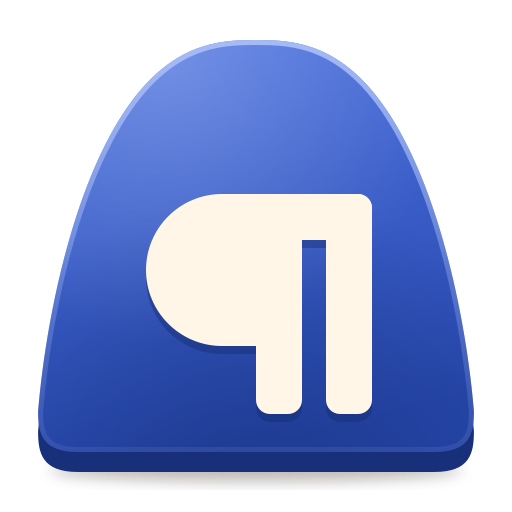
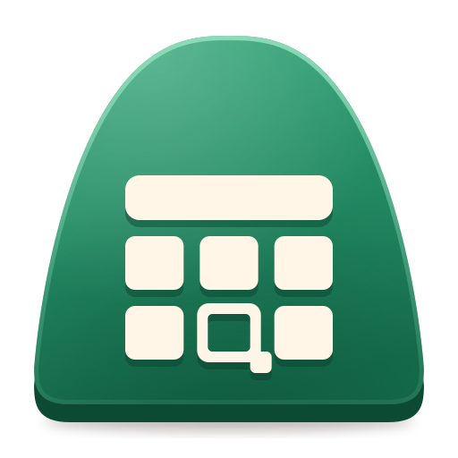
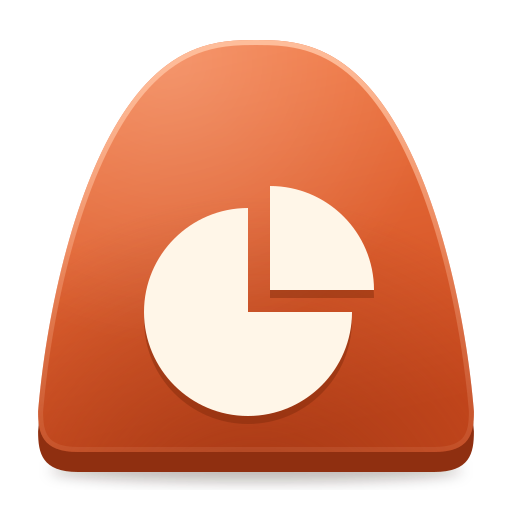

Kiln Write, Grid, Deck and Notes replace Word, Excel, PowerPoint and OneNote.
Your .docx, .xlsx and .pptx open as they are, the ribbon and shortcuts are where you
left them, and it runs on Linux, Windows, macOS, Android and the web. No subscription, no account.
Windows first release comingmacOS first release comingLinux first release comingAndroid first release coming
Writing, numbers and presenting, with the files you already have. Kiln
reads and writes the Office formats directly, so nothing has to be converted first.
Opens and saves your files
.docx, .xlsx and .pptx, plus OpenDocument, CSV and PDF export. Parts it cannot edit, such as macros, are carried through a save untouched.
The layout you know
Ribbon, File menu, status bar, Key Tips on Alt and Office's keyboard shortcuts, in a lighter design with light and dark themes.
Find any command
The command palette (Ctrl+Shift+P) searches every command, by its name here or by what Office calls it.
Version history
Every document keeps its own history on your device: name a version, preview it, restore it.
Collaboration you host
Edit documents and slides together, live, through a small server you run yourself. Nobody else sees your files.
Every device
Desktop apps for Linux, macOS and Windows, an Android app, and a web app that installs and works offline.
Four apps, one kiln
A kiln is where soft things become things that last. Every app is a glazed
tile shaped like a kiln arch, and each burns its own colour.

Kiln Write
Documents, for Word users
Pages laid out the way Word lays them out, from the same .docx.
Styles, sections, headers and footers, footnotes, tables of contents
Track changes and threaded comments
Markdown shortcuts as you type, and a focus mode

Kiln Grid
Spreadsheets, for Excel users
A formula engine that follows Excel's rules, down to dynamic arrays and LAMBDA.
More than 350 functions, with their arguments shown as you type
Charts, pivot tables, conditional formatting, sort and filter
Formula Lab: watch a formula evaluate step by step

Kiln Deck
Presentations, for PowerPoint users
Masters, layouts and themes as PowerPoint defines them.
Smart guides while you arrange shapes
Slide show and presenter view, with notes and a timer
Transitions, animations and handouts

Kiln Notes
Notebooks, for OneNote users
Notebooks with sections, pages and tags, written with the same editor as Kiln Write.
To Do, Important and your own tags, with a summary of everything tagged
Search across every notebook; export a page to .docx, Markdown or PDF
All of them opened from Kiln Home: what are we making today?
Feels like home
If you have used Office, you already know where things are.
The ribbon, with the same tabs and groups in the same order, in the classic or the simplified layout, and Ctrl+F1 to collapse it.
The File menu (Backstage): recent files, templates, Info, Save As, Print with preview, Export and Options.
The status bar, with page and word counts in Kiln Write, sums and averages of the selection in Kiln Grid, and zoom.
Office's shortcuts, all of them, and Key Tips when you press Alt.
Office's words: search the palette for "Merge & Center" or "Format Painter" and you get the command.
Subscription, or a one-time purchase of an older version
Account
None
Microsoft account required
Formats
DOCX, XLSX, PPTX natively; ODF import and export; CSV; PDF export
DOCX, XLSX, PPTX natively; ODF; CSV; PDF export
Works offline
Yes, including the web app
Desktop apps yes; web apps no
Collaboration
Live, through a server you run (Kiln Write, Kiln Deck, Kiln Notes)
Live, through OneDrive or SharePoint
Version history
Every document, kept on your device
Files stored in OneDrive or SharePoint
Macros (VBA)
Kept in the file, not run
Run
Platforms
Linux, Windows, macOS, Android, web
Windows, macOS, iOS, Android, web
Licence
Open source, AGPL-3.0-or-later
Proprietary
Roadmap
Kiln is being built in the open, one reviewed work package at a time. There is no release yet; this is where it stands.
23 / 49
v0.1 work packages done; four more are part-built and resume next.
240 / 686
Office features a switcher would miss, done or better (critical and commonly missed).
484+
Excel functions, checked against 5,300 conformance cases.
DoneRust core: text shaping, layout, formula engine, charts, PDF export. Word, Excel and PowerPoint files open and save with round-trip tests. The Kiln interface, the Write editor and the Grid surface.
NextGrid sorting, filters, conditional formatting and pivot tables; the Deck editor and slide shows; OpenDocument files; Kiln Notes; collaboration and version history.
ThenDesktop apps for Windows, macOS and Linux, the Android app and the web app; accessibility and translations; benchmarks against LibreOffice, ONLYOFFICE and the other open suites.
v0.1.0The first release, with installers and screenshots. After it, parity rounds close the remaining gaps with Office, release by release.